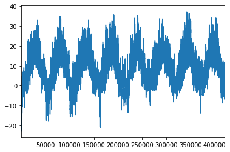
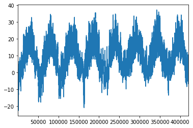
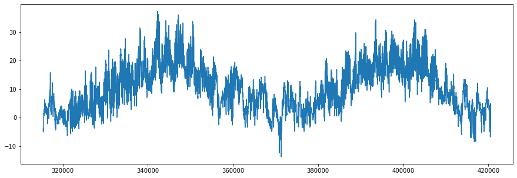

Final Handbook - Winningest Methods in Time Series Forecasting¶
Temperature Forecasting (Supplementary Notebook)¶
Similar to what was done in previous sections, this notebook applies the methodology used in the M5 Forecasting notebook to the Jena Climate dataset. Specifically, we will be forecasting the temperature variable.
1. Jena Climate Dataset¶
Let’s load the dataset and examine it.
import numpy as np
import pandas as pd
import matplotlib.pyplot as plt
### CREATE X,Y ####
def create_xy(series, window_size, prediction_horizon, shuffle = False):
x = []
y = []
for i in range(0, len(series)):
if len(series[(i + window_size):(i + window_size + prediction_horizon)]) < prediction_horizon:
break
x.append(series[i:(i + window_size)])
y.append(series[(i + window_size):(i + window_size + prediction_horizon)])
x = np.array(x)
y = np.array(y)
return x,y
plt.rcParams['figure.figsize'] = [15, 5]
np.set_printoptions(precision = 6, suppress = True)
df = pd.read_csv('datasets/climate/jena_climate_2009_2016.csv')
---------------------------------------------------------------------------
FileNotFoundError Traceback (most recent call last)
<ipython-input-1-0371b3282efe> in <module>
20 np.set_printoptions(precision = 6, suppress = True)
21
---> 22 df = pd.read_csv('datasets/climate/jena_climate_2009_2016.csv')
~/opt/anaconda3/envs/atsa/lib/python3.7/site-packages/pandas/io/parsers.py in read_csv(filepath_or_buffer, sep, delimiter, header, names, index_col, usecols, squeeze, prefix, mangle_dupe_cols, dtype, engine, converters, true_values, false_values, skipinitialspace, skiprows, skipfooter, nrows, na_values, keep_default_na, na_filter, verbose, skip_blank_lines, parse_dates, infer_datetime_format, keep_date_col, date_parser, dayfirst, cache_dates, iterator, chunksize, compression, thousands, decimal, lineterminator, quotechar, quoting, doublequote, escapechar, comment, encoding, dialect, error_bad_lines, warn_bad_lines, delim_whitespace, low_memory, memory_map, float_precision, storage_options)
603 kwds.update(kwds_defaults)
604
--> 605 return _read(filepath_or_buffer, kwds)
606
607
~/opt/anaconda3/envs/atsa/lib/python3.7/site-packages/pandas/io/parsers.py in _read(filepath_or_buffer, kwds)
455
456 # Create the parser.
--> 457 parser = TextFileReader(filepath_or_buffer, **kwds)
458
459 if chunksize or iterator:
~/opt/anaconda3/envs/atsa/lib/python3.7/site-packages/pandas/io/parsers.py in __init__(self, f, engine, **kwds)
812 self.options["has_index_names"] = kwds["has_index_names"]
813
--> 814 self._engine = self._make_engine(self.engine)
815
816 def close(self):
~/opt/anaconda3/envs/atsa/lib/python3.7/site-packages/pandas/io/parsers.py in _make_engine(self, engine)
1043 )
1044 # error: Too many arguments for "ParserBase"
-> 1045 return mapping[engine](self.f, **self.options) # type: ignore[call-arg]
1046
1047 def _failover_to_python(self):
~/opt/anaconda3/envs/atsa/lib/python3.7/site-packages/pandas/io/parsers.py in __init__(self, src, **kwds)
1860
1861 # open handles
-> 1862 self._open_handles(src, kwds)
1863 assert self.handles is not None
1864 for key in ("storage_options", "encoding", "memory_map", "compression"):
~/opt/anaconda3/envs/atsa/lib/python3.7/site-packages/pandas/io/parsers.py in _open_handles(self, src, kwds)
1361 compression=kwds.get("compression", None),
1362 memory_map=kwds.get("memory_map", False),
-> 1363 storage_options=kwds.get("storage_options", None),
1364 )
1365
~/opt/anaconda3/envs/atsa/lib/python3.7/site-packages/pandas/io/common.py in get_handle(path_or_buf, mode, encoding, compression, memory_map, is_text, errors, storage_options)
645 encoding=ioargs.encoding,
646 errors=errors,
--> 647 newline="",
648 )
649 else:
FileNotFoundError: [Errno 2] No such file or directory: 'datasets/climate/jena_climate_2009_2016.csv'
df.head(10)
| Date Time | p (mbar) | T (degC) | Tpot (K) | Tdew (degC) | rh (%) | VPmax (mbar) | VPact (mbar) | VPdef (mbar) | sh (g/kg) | H2OC (mmol/mol) | rho (g/m**3) | wv (m/s) | max. wv (m/s) | wd (deg) | |
|---|---|---|---|---|---|---|---|---|---|---|---|---|---|---|---|
| 0 | 01.01.2009 00:10:00 | 996.52 | -8.02 | 265.40 | -8.90 | 93.3 | 3.33 | 3.11 | 0.22 | 1.94 | 3.12 | 1307.75 | 1.03 | 1.75 | 152.3 |
| 1 | 01.01.2009 00:20:00 | 996.57 | -8.41 | 265.01 | -9.28 | 93.4 | 3.23 | 3.02 | 0.21 | 1.89 | 3.03 | 1309.80 | 0.72 | 1.50 | 136.1 |
| 2 | 01.01.2009 00:30:00 | 996.53 | -8.51 | 264.91 | -9.31 | 93.9 | 3.21 | 3.01 | 0.20 | 1.88 | 3.02 | 1310.24 | 0.19 | 0.63 | 171.6 |
| 3 | 01.01.2009 00:40:00 | 996.51 | -8.31 | 265.12 | -9.07 | 94.2 | 3.26 | 3.07 | 0.19 | 1.92 | 3.08 | 1309.19 | 0.34 | 0.50 | 198.0 |
| 4 | 01.01.2009 00:50:00 | 996.51 | -8.27 | 265.15 | -9.04 | 94.1 | 3.27 | 3.08 | 0.19 | 1.92 | 3.09 | 1309.00 | 0.32 | 0.63 | 214.3 |
| 5 | 01.01.2009 01:00:00 | 996.50 | -8.05 | 265.38 | -8.78 | 94.4 | 3.33 | 3.14 | 0.19 | 1.96 | 3.15 | 1307.86 | 0.21 | 0.63 | 192.7 |
| 6 | 01.01.2009 01:10:00 | 996.50 | -7.62 | 265.81 | -8.30 | 94.8 | 3.44 | 3.26 | 0.18 | 2.04 | 3.27 | 1305.68 | 0.18 | 0.63 | 166.5 |
| 7 | 01.01.2009 01:20:00 | 996.50 | -7.62 | 265.81 | -8.36 | 94.4 | 3.44 | 3.25 | 0.19 | 2.03 | 3.26 | 1305.69 | 0.19 | 0.50 | 118.6 |
| 8 | 01.01.2009 01:30:00 | 996.50 | -7.91 | 265.52 | -8.73 | 93.8 | 3.36 | 3.15 | 0.21 | 1.97 | 3.16 | 1307.17 | 0.28 | 0.75 | 188.5 |
| 9 | 01.01.2009 01:40:00 | 996.53 | -8.43 | 264.99 | -9.34 | 93.1 | 3.23 | 3.00 | 0.22 | 1.88 | 3.02 | 1309.85 | 0.59 | 0.88 | 185.0 |
series = df['T (degC)'].iloc[5:]
series.plot()
plt.show()
print(series.shape)

(420546,)
series = series.iloc[::6]
series.plot()
plt.show()
print(series.shape)

(70091,)
### HYPERPARAMETERS ###
window_size = 240
prediction_horizon = 1
### TRAIN TEST VAL SPLIT ###
train_series = series[:35045]
val_series = series[35045:52569]
test_series = series[52569:]
train_x, train_y = create_xy(train_series, window_size, prediction_horizon)
val_x, val_y = create_xy(val_series, window_size, prediction_horizon)
test_x, test_y = create_xy(test_series, window_size, prediction_horizon)
train_y = train_y.flatten()
val_y = val_y.flatten()
test_y = test_y.flatten()
print(train_x.shape)
print(train_y.shape)
print(val_x.shape)
print(val_y.shape)
print(test_x.shape)
print(test_y.shape)
(34805, 240)
(34805,)
(17284, 240)
(17284,)
(17282, 240)
(17282,)
test_series.plot()
plt.show()

LightGBM¶
import lightgbm as lgb
model = lgb.LGBMRegressor()
model.fit(train_x, train_y,
eval_metric = 'l1',
eval_set = [(val_x, val_y)],
early_stopping_rounds = 100,
verbose = 0)
LGBMRegressor()
forecast = model.predict(test_x)
print(' LightGBM MAE: %.4f' % (np.mean(np.abs(forecast - test_y))))
#series[-test_size:].plot(marker = 'o', linestyle = '--')
#plt.plot(forecast, marker = 'o', linestyle = '--')
#plt.show()
LightGBM MAE: 0.5256
### HYPERPARAMETERS ###
window_size = 240
prediction_horizon = 24
### TRAIN VAL TEST SPLIT ###
train_series = series[:35045]
val_series = series[35045:52569]
test_series = series[52569:]
train_x, train_y = create_xy(train_series, window_size, prediction_horizon)
val_x, val_y = create_xy(val_series, window_size, prediction_horizon)
test_x, test_y = create_xy(test_series, window_size, prediction_horizon)
print(train_x.shape)
print(train_y.shape)
print(val_x.shape)
print(val_y.shape)
print(test_x.shape)
print(test_y.shape)
(34782, 240)
(34782, 24)
(17261, 240)
(17261, 24)
(17259, 240)
(17259, 24)
recursive_x = test_x
forecast_ms = []
for j in range(prediction_horizon):
pred = model.predict(recursive_x)
recursive_x = np.hstack((recursive_x[:, 1:], pred[:, np.newaxis]))
forecast_ms.append(pred)
forecast_ms = np.asarray(forecast_ms).T
print(np.mean(np.abs(test_y - forecast_ms)))
2.0830415023892113
Summary¶
Using LightGBM with a recursive forecasting strategy demonstrates that we can achieve an MAE of about 2.08°C without hyperparameter tuning.